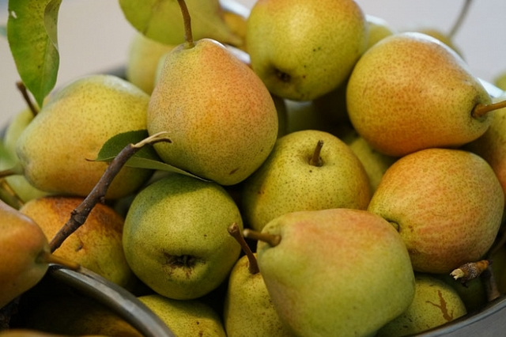

Leggyakoribb körtefélék
Vilmos körte
A világon a legelterjedtebb körtefajta. Hazánkban a 'Bosc kobak' után a legnagyobb arányban termesztik. Augusztus második-harmadik dekádjában szedhető. Tárolótól függően 1-3 hónapig is eltartható. Gyümölcse nagy 160-220 grammos.
Japán körte
A "nasi" Japánban termesztett körtét jelent, más országokban ezt a gyümölcsöt különböző nevekkel illetik, pl. vízikörte, ázsiai körte, almakörte, körtealma ... Több tulajdonságban is eltér az európai körtétől. Nemcsak a gyümölcs alakja, színe, beltartalmi értékei térnek el, hanem az érési típusa is.
Packham's Triumph
Érés: szeptember vége. Nagy vagy igen nagy gyümölcsű, tömege 200-270 gr. Színe éretten sárga. Húsa fehér, olvadó vajkörte, a 'Vilmos'-hoz hasonló édes-savas, gyakorlatilag kősektmentes. Középerős növekedésű, termőkorban ívesen lehajló koronát nevel. Termőre fordulás után rendszeresen és igen bőven terem.
Curato-Pap körte
Szeptember végén október elején érik. Jól tárolható egészen 4-5 hónapig is. A Pap körte nagy 180-300 g , megnyúlt körte alakú. Héja sárgászöld színű és egy hosszanti barna csík húzódik rajta. Húsa kemény, kövecsesedésre hajlamos, édes savas ízű. Konzervipari fajta. Szétterülő koronát nevel,erős növekedésű. Betegségeknek jól ellenáll a varasodáson kívül. Rendszeresen és bőven terem.

Kieffer körte
A Kieffer körtét szeptember közepétől szedik, október-december hónapokban fogyasztható. Rendszeresen és igen bőven terem, elég korán termőre fordul. Gyümölcse nagy, széles körte alakú, jellegzetesen középen a legszélesebb, csészéje és kocsánya felé egyenletesen keskenyedő. Színe szalmasárga, sokszor élénk pirossal mosott, héja érdes, para szemölcsös. Húsa sárgásfehér, kemény, a magház körül kövecsesedő, túléretten hirtelen puhuló. Íze fanyarkás, jellegtelen, erősen birsszerű illattal. Elég jól tárolható, de barnul. Éretlenül jól szállítható, később már nyomásfoltokat kap. Ellenáló, a legigénytelenebb fajta a száraz futóhomokon is jól megél.
Reszletesen
Clapp kedveltje körte
Augusztus első hetében szüretelhető, 1-2 hónapig tárolható. Középnagy gyümölcsének tömege 180-220 gr. Szabályos körte alakú. Gyümölcshéja éretten szalmasárga, napos oldalon 40-50%-ban pirossal fedett. Húsa fehér színű, olvadó, bőlevű, illatos. Elsősorban friss fogyasztásra való, de szép fehér húsa miatt feldolgozásra is kiválóan alkalmas. Középkorán fordul termőre. Hazánk szélsőséges téli hőmérséklet ingadozását jól tűri. Termőre fordítását lekötözéssel gyorsítani lehet.